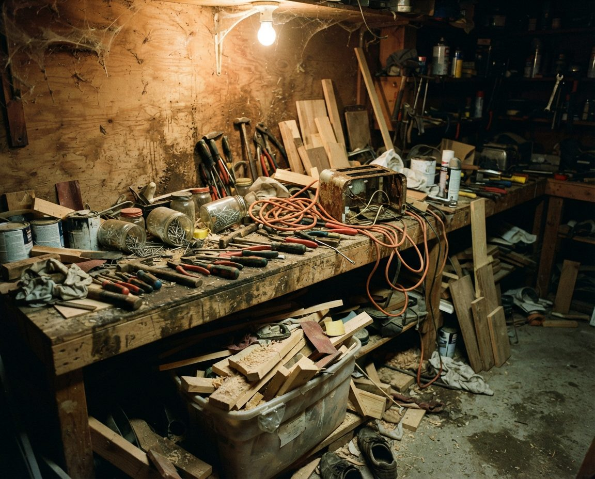

The houses on the south shore of the Glenmore Reservoir are some of the oldest in Calgary to have stayed with one family. Their garages show it. We clear Pump Hill, Bayview and Palliser garages before a downsizing move or a sale, or simply so the car and the canoe both fit again, and we sort every load before it reaches a City scale so you aren't paying landfill rates on things that go free.
Bayview sits on a peninsula on the reservoir's south shore. Alcan Design Homes built it, the first lot sold in February 1967, and the houses were ready to move into in January 1968. Every house there has a front garage and there are no lanes. Pump Hill, just south and east between 90 Avenue and Southland Drive, started building the same year on lots that run large by city standards. Palliser sits beside them to the west. All three share one community association and the same stretch of shoreline.
Most of the cleanouts we plan for here start with a change in the household: a couple leaving the house they've had for decades, adult children clearing it for them, or a sale. Some start with something smaller, like the canoe coming home for the winter with nowhere to go. This page covers both, and where every part of a southwest Calgary garage actually ends up.
For a quote, email inquiry@garagescape.ca three photos: the garage from the driveway with the door up, the back wall, and anything big (a boat, a chest freezer, a workbench that runs the length of the wall). If there's a moving or possession date, put it in the subject line. Or call (587) 804-9266.
The City describes the Glenmore Reservoir as the only facility in Calgary for sailing, rowing, dragon boating, canoeing and kayaking, and Bayview and Pump Hill sit on its south shore. In summer many of them sit on City racks. The City rents racks at South Glenmore Park and Heritage Park from May 1 to October 31, and the South Glenmore Park racks can't be booked for winter storage at all. Heritage Park's gravel lot is the only City option for winter, from November 1 to April 23.
So the first week of November is when a 16-foot canoe, two kayaks or a sailing dinghy on its dolly arrive back at the house and need a place out of the snow. If the garage was already full, the car goes out to the driveway instead, which is the wrong way round for a Calgary winter.
| Item | Keep it if | Where it goes if not |
|---|---|---|
| Canoe, kayak or rowing shell | Someone in the house still paddles. We clear a wall or the space above the car for it. | A sound hull goes to a family member, a club or a private sale. A cracked one goes to landfill as garbage by weight. |
| Sailing dinghy and dolly | You still sail it. Measure the dolly's length before we clear the bay. | Sold or given away with its sails and rigging. Aluminum masts and booms can go as scrap metal. |
| Inflatable boats and paddleboards | You take them somewhere else. The City's rules for the reservoir don't allow inflatables. | Donation if it holds air; landfill if it doesn't. |
| Life jackets and PFDs | They fit someone and the foam is intact. The reservoir rules require one to be worn on the water. | Old, faded or torn foam goes to garbage, not donation. |
| Paddles, oars, spare rigging | They match a boat you're keeping. | Wood and composite paddles to donation if usable. |
Sources: City of Calgary, Book a boat rack, and the Glenmore Sailing School rules page, both read November 3, 2026. We don't move boats on the water and we don't tow trailers; we clear and sweep the space so you can bring the boat in.

An illustration of a long-used workbench, not a photo of a Pump Hill or Bayview client's garage. A bench like this usually takes longer than the rest of the garage, because every jar has to be looked at.
A garage used by one family for fifty years fills in layers. The newest things sit by the door, and the oldest are at the back, under the bench and up in the rafters. We plan the day around those layers, because each one sorts differently.
| Where it sits | What we usually find | How it sorts |
|---|---|---|
| By the door | Current tires, the mower, the snowblower, recycling waiting to go out | Mostly kept, or sold with the house if you're moving to a condo. |
| Along the side walls | Kids' bikes and hockey gear from a generation ago, garden tools, lawn chairs | Donation for most of it, scrap metal for broken frames. |
| Shelves and the bench | Paint from every room the house has had, stains, solvents, jars of hardware, hand tools | Paint and solvents go to household hazardous waste. Good tools go to family or donation. |
| Under the bench and at the back | Old fuel cans, motor oil, pesticides from the garden's early years, a second fridge | Hazardous waste for the liquids. The fridge goes to the landfill with its refrigerant fee. |
| Rafters and the top shelf | Boxes that came from the house: school papers, photos, a parent's tax records, Christmas decorations | Nothing in these leaves without your say. We bring them down and set them aside for you. |
Paint made before the 1990s can contain lead, and it's often in cans that have rusted at the rim. It all goes to household hazardous waste regardless, so we keep the cans upright and apart from the main load. If the building itself has old wallboard, ceiling tiles or wrapped pipes from the original construction, we leave them alone: in a house of this age, those should be checked for asbestos by an abatement contractor before anyone pulls them down.
For a garage where the volume itself has become the problem, our hoarding garage cleanup page explains how we handle it quietly. For the bench and the shelving once it's empty, our Pump Hill garage organization page covers storage.
When a Pump Hill or Bayview owner moves to an apartment or a condo, the garage doesn't move with them. Most buildings give each unit a parking stall and a storage locker, and the locker is where the garage has to fit. So before we sort anything, we ask one question: what size is the new storage space?
Movers generally won't load paint, fuel, propane or chemicals, so those come out of the garage before moving day either way. Our downsizing garage cleanout page covers where each of them goes in Calgary, and the order for family picks, an estate sale and moving day. If the house is being listed, our garage cleanout before selling page has the timeline around listing photos and possession. If the move follows a death in the family, the estate garage cleanout page covers valuables found in boxes and who in the family decides.
The nearest City landfills to the south shore are on the east side of the city, so every garage load from here is a long drive to a scale. The City's residential rules make sorting worth the effort before that drive. If you bring a mix of free and charged items, you pay for the entire load, and the highest rate that applies to anything in it is the one you're charged.
| Stream | Where | Cost at the gate |
|---|---|---|
| Paint, stains, solvents, fuel, garden chemicals | Cedarbrae Fire Station #24, 2607 106 Avenue SW, open 8 a.m. to 6 p.m. every day; or an Eco Centre | Free if the drop-off is only household hazardous waste |
| Electronics, tires, clothing and textiles, foam | City landfill, as their own load | Free on their own; charged if mixed in with garbage |
| Mixed garage garbage | City landfill | $25 flat under 250 kg; $113 a tonne at 250 kg and over |
| Fridge, freezer, dehumidifier, air conditioner | City landfill | $17 refrigerant surcharge each, plus weight |
| Untreated lumber, pallets | City landfill recycling | $90 a tonne |
| Scrap metal up to 1.2 m | City landfill | $113 a tonne |
| Bulky, light loads needing special handling | City landfill | $275 hard-to-handle surcharge on top of the weight rate |
| Usable furniture, tools, sports gear, boats | Donation, family or private sale | Nothing, if someone wants it |
Sources: City of Calgary, Landfill and Eco Centre residential materials and rates (last updated January 2026) and the Household Hazardous Waste Program, both read November 3, 2026. The City says some hazardous items are accepted only at its three Eco Centres, so we check each one against its list. Landfill staff have the final say on what a load is and what it's charged.
The hard-to-handle surcharge matters more in these garages than most. A load of empty boxes, old foam mattresses from the cabin and a broken canoe weighs very little and takes up a lot of room, which is the kind of load it's written for. Breaking things down and packing the truck tightly is part of the job.
In Bayview every garage faces the street and there's no lane behind, so everything leaves by the front driveway. Pump Hill's lots are bigger and many sit on a slope toward the reservoir, which means long, sometimes steep driveways that ice up in November. That shapes the day:
A bin rental is an option on a wide Pump Hill driveway, but it sits there for days and still has to be filled by someone. We load as we sort and leave with everything the same day. For lane garages in the inner city the logistics are different; see our Mount Royal and Elbow Park cleanout page. Across the reservoir, the laneless 1950s streets west of Elbow Drive are on our Britannia, Bel-Aire and Mayfair cleanout page. On the north shore, Lakeview's detached lane garages are on our Lakeview garage cleanout page.
A lot of the calls we expect from these communities will come from adult children, often in another city, about a parent who still lives in the house. The parent usually wants to be part of the decisions and doesn't want a crew rushing them. Here is how we run that kind of day.
If the parent also needs regular help at home, such as housekeeping, yard work or snow removal, the City of Calgary points seniors to 403-SENIORS (403-736-4677) or 211. That isn't a service we provide, but it often comes up during the same conversation.
We don't publish a flat price because two garages on the same Bayview crescent can be different jobs. These are the factors that change a quote in this part of the city, roughly in the order they matter.
| Factor | Why it matters here |
|---|---|
| How much ends up at a paid scale | Old lumber, tile, concrete and a solid-wood workbench weigh far more than boxes. |
| How many separate streams the load needs | Fifty years of paint and chemicals means a hazardous waste stop. Electronics and tires go free only if they arrive separately. |
| Fridges, freezers and air conditioners | Each one carries the City's refrigerant surcharge plus its weight. |
| Bulky, light items | Boats, foam and empty boxes take truck space and can trigger the hard-to-handle surcharge. |
| The rafters and the boxes | Sorting a parent's paperwork with them takes longer than hauling a full garage of junk. |
| A moving or possession date | A fixed date narrows which days we can offer. |
| The driveway | A long or icy carry to the street adds time. |
Once the garage is empty, the floor often shows fifty winters of road salt. Our garage floor cleaning page covers bare concrete, and coated floor cleaning covers epoxy and polyaspartic floors.
We also work in Eagle Ridge, Kelvin Grove, Oakridge, Braeside and Cedarbrae. For the rest of the city, start with garage cleanout in Calgary or garage cleaning. If a renovation filled the garage with offcuts, see post-renovation garage cleanup. In the west end, see Aspen Woods and Springbank Hill; south of the city, Heritage Pointe.
We quote each garage from photos or a walkthrough rather than a flat price. What moves it most is the weight that ends up at a paid landfill scale, how much of the load can go to free streams instead, items with their own fees such as fridges and freezers, and how much of the sorting needs the owner or family there. The City's own 2026 landfill rates are a useful reference: $25 flat for a load under 250 kg, $113 a tonne above that, and a $17 refrigerant surcharge per fridge, freezer or air conditioner plus its weight.
At City of Calgary landfills in 2026, a residential load of garbage or mixed garbage and free items costs a flat $25 if it weighs under 250 kg. At 250 kg and over you pay for the whole load by weight, at $113 a tonne for basic garbage, and the highest applicable rate applies to a mixed load. Electronics, household hazardous waste, clothing and textiles, tires and foam are free on their own, but if you bring them mixed with charged items, you pay for the entire load.
Sort it before it moves. Usable items can go to donation or family, paint and chemicals go free to a City household hazardous waste drop-off (from Pump Hill the nearest is Cedarbrae Fire Station #24 at 2607 106 Avenue SW), and electronics and tires are free at the landfill when they arrive separately. What's left is the only part you pay to dump. Hiring a crew costs more than doing it yourself, but it saves the trips, the lifting and the truck.
The City rents boat racks for the summer at South Glenmore Park and Heritage Park from May 1 to October 31. South Glenmore Park racks can't be booked for winter storage. Heritage Park's gravel lot has winter rack bookings from November 1 to April 23. If yours isn't booked there, the boat comes home, usually to the garage, so it needs a clear wall or ceiling space before the first snow.
Yes. We work through the garage with your parent at their pace or with whoever in the family is deciding, keep what's going to the new home in its own marked area, and haul the rest the same day. Tell us the size of the condo's storage locker if you know it. Whatever is set aside to move should fit in it.
Only for the walkthrough, which can be in person or on a video call with a family member who lives elsewhere. On the day we can work from the overhead door code, put anything that looks personal, valuable or hard to replace in a set-aside pile, and send photos when we finish.
Firearms, ammunition and explosives, which belong with police; unlabelled chemicals we can't identify; and anything attached to the building itself, such as old wallboard, ceiling tiles or pipe wrap, which in a house from the 1960s or 1970s should be checked for asbestos by an abatement contractor before anyone removes it. Everything else in a typical garage, including old paint, fuel cans, fridges, tires, boats and electronics, we sort and take.
Three photos (the garage from the driveway, the back wall, and anything large) are enough for a quote. If there's a move or a possession date, tell us, and if you're arranging this for a parent, tell us who should be on the walkthrough call.
Pump Hill, Bayview, Palliser and the rest of southwest Calgary.